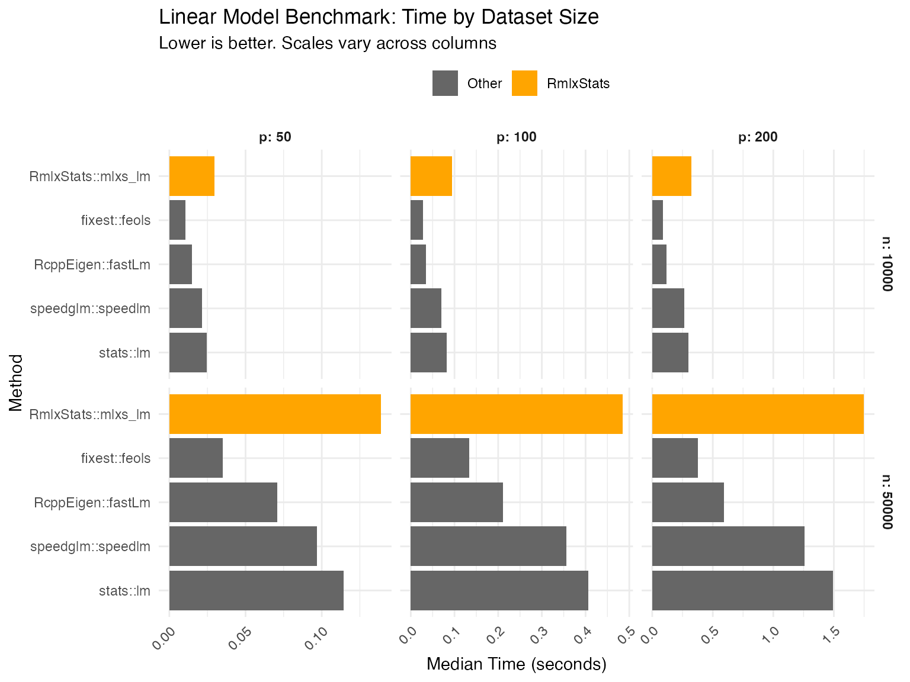
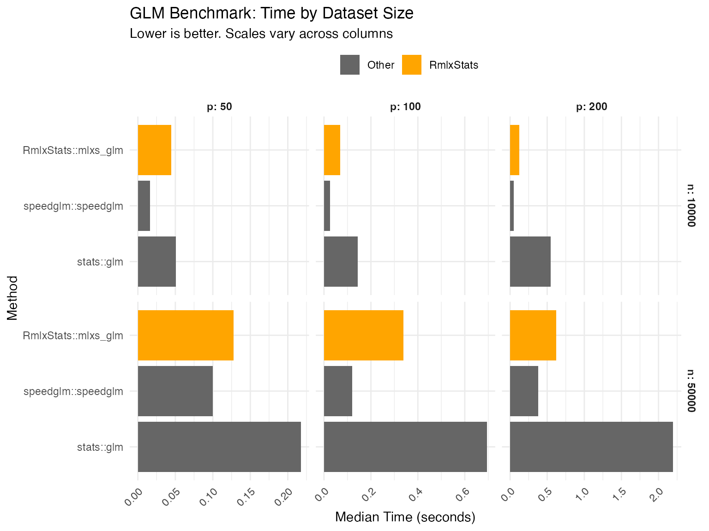
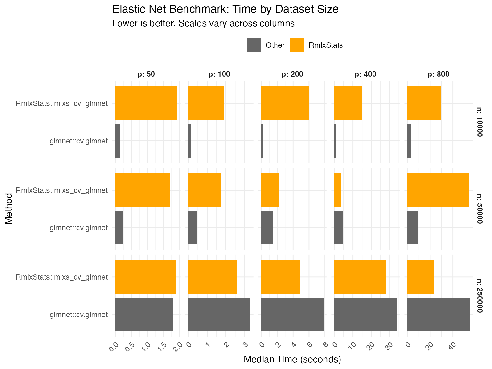
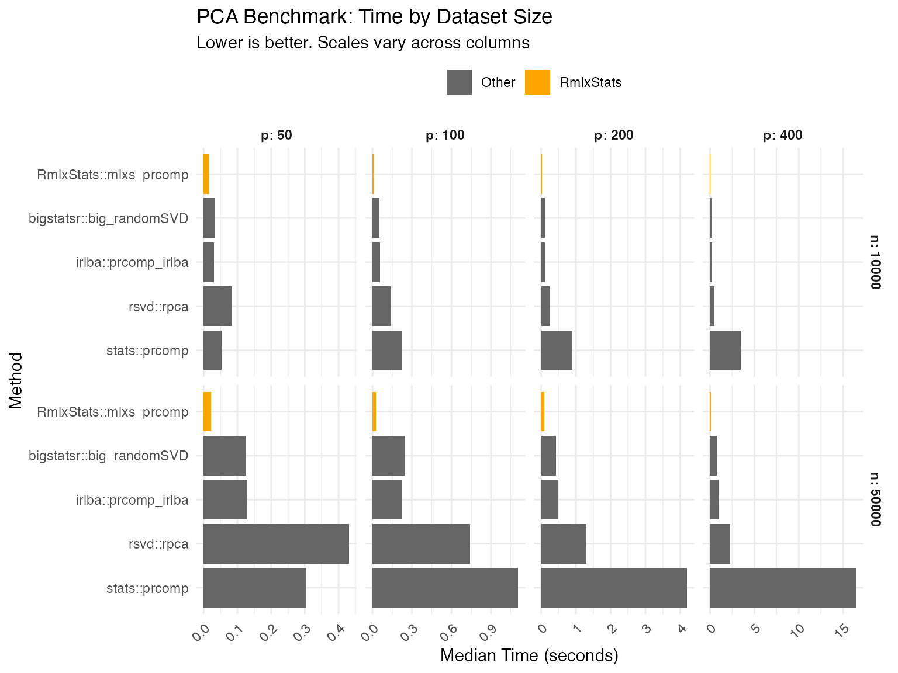
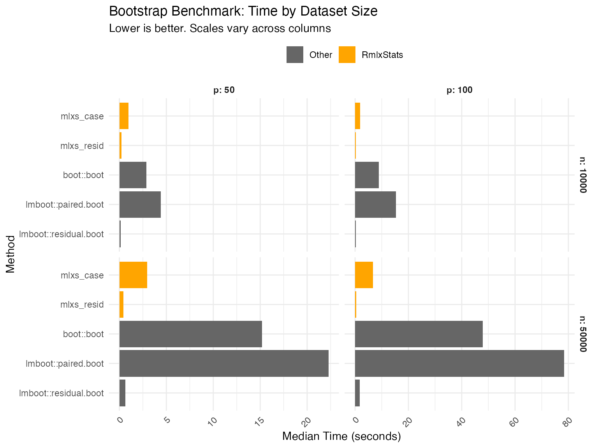
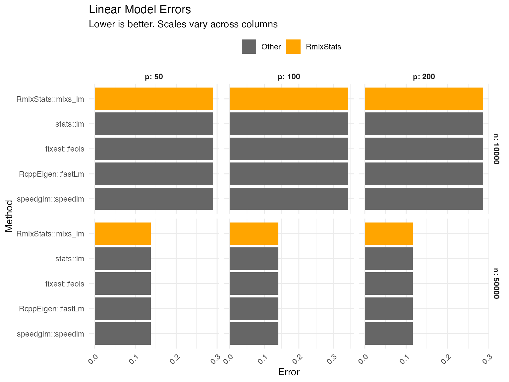
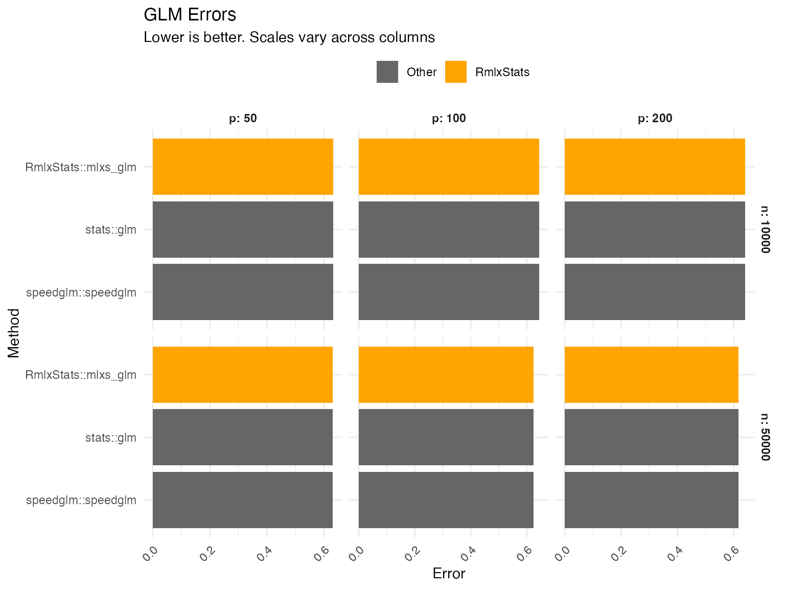
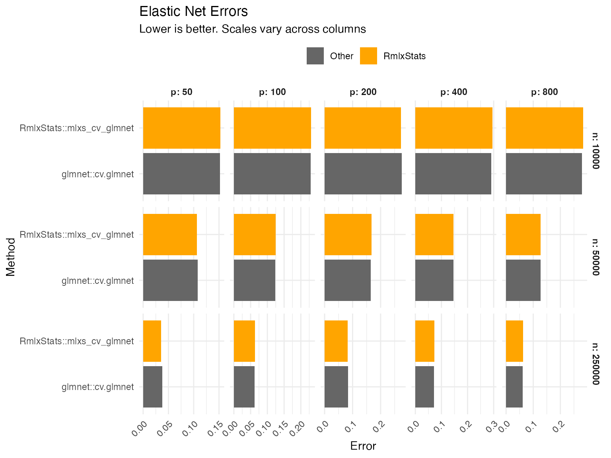
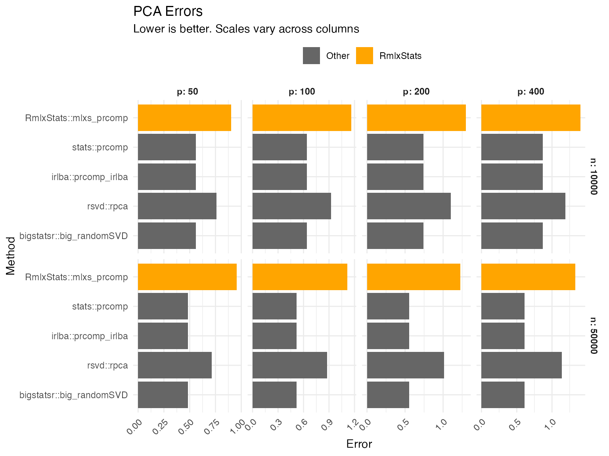
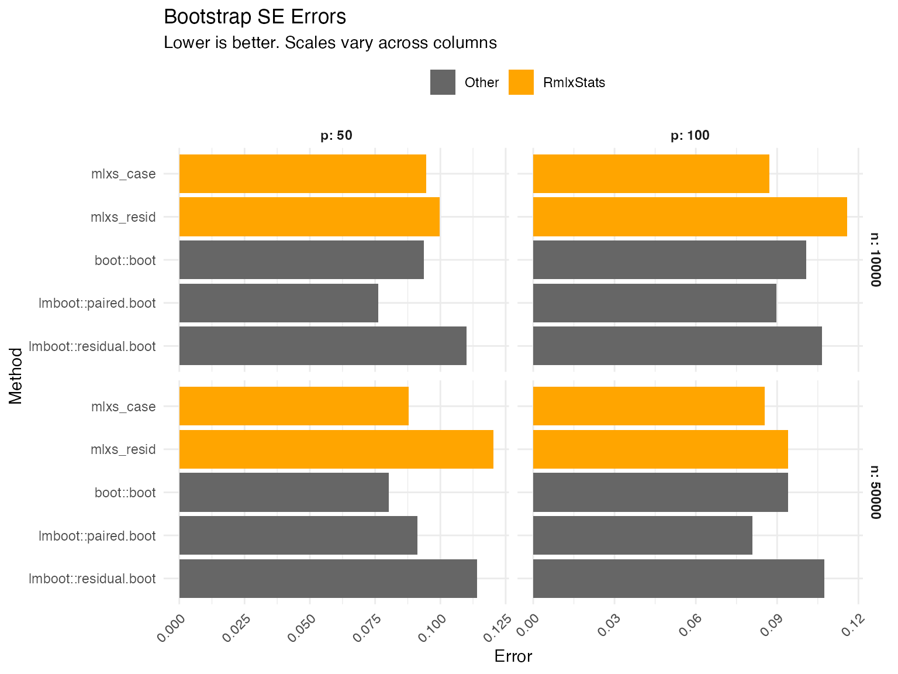

We benchmark RmlxStats against base R and specialized fast fitting
packages, across varying numbers of cases (n) and
predictors (p). We also check accuracy.
Benchmarking was run on an M2 Macbook Air.
Setup code
Benchmarking Code
Data Generation
Code
set.seed(20251111)
n_sizes <- c(10000, 50000, 250000)
p_sizes <- c(50, 100, 200, 400, 800)
n_max <- max(n_sizes)
p_max <- max(p_sizes)
X <- matrix(rnorm(n_max * p_max), nrow = n_max, ncol = p_max)
colnames(X) <- paste0("x", seq_len(p_max))
X_glmnet <- matrix(rnorm(n_max * p_max), nrow = n_max, ncol = p_max)
for (j in 2:p_max) {
X_glmnet[, j] <- 0.6 * X_glmnet[, j - 1] + sqrt(1 - 0.6^2) * X_glmnet[, j]
}
colnames(X_glmnet) <- paste0("x", seq_len(p_max))
beta_true <- rnorm(p_max, mean = 0, sd = 0.5)
y_continuous <- drop(X %*% beta_true + rnorm(n_max, sd = 5))
# only 1 in 10 predictors matter:
beta_glmnet_true <- rep(0, p_max)
beta_glmnet_true[seq(10, p_max, 10)] <- rnorm(length(seq(10, p_max, 10)), sd = 0.35)
y_sparse <- drop(X_glmnet %*% beta_glmnet_true + rnorm(n_max, sd = 5))
linpred <- drop(X %*% beta_true) / 10
prob <- 1 / (1 + exp(-linpred))
y_binary <- rbinom(n_max, size = 1, prob = prob)
full_data <- data.frame(
y_cont = y_continuous,
y_bin = y_binary,
y_sparse = y_sparse,
X
)
# for fast debugging
if (params$develop) {
n_sizes <- n_sizes/10
p_sizes <- p_sizes/5
}
bench_grid <- expand.grid(
n = n_sizes,
p = p_sizes,
stringsAsFactors = FALSE
)
bench_grid <- bench_grid[bench_grid$n > bench_grid$p, ]
all_results <- data.frame()
all_accuracy <- data.frame()Helper functions
relative_rmse <- function(estimate, truth) {
scale <- sqrt(mean(truth^2))
sqrt(mean((estimate - truth)^2)) / max(scale, 1e-12)
}
safe_relative_rmse <- function(estimate, truth) {
estimate <- as.numeric(estimate)
truth <- as.numeric(truth)
if (anyNA(estimate) || anyNA(truth) ||
any(!is.finite(estimate)) || any(!is.finite(truth))) {
return(NA_real_)
}
relative_rmse(estimate, truth)
}
make_pca_fixture <- function(n, p, rank_k, noise_sd = 2) {
scores_raw <- qr.Q(qr(matrix(rnorm(n * rank_k), nrow = n, ncol = rank_k)))
scores_raw <- scale(scores_raw, center = TRUE, scale = FALSE)
scores_basis <- qr.Q(qr(scores_raw))
rotation <- qr.Q(qr(matrix(rnorm(p * rank_k), nrow = p, ncol = rank_k)))
sdev_true <- seq(from = 2.5, to = 1.5, length.out = rank_k)
singular_values <- sdev_true * sqrt(n - 1)
x_signal <- scores_basis %*% diag(singular_values, nrow = rank_k) %*%
t(rotation)
x <- x_signal + matrix(rnorm(n * p, sd = noise_sd), nrow = n, ncol = p)
colnames(x) <- paste0("pcx", seq_len(p))
list(
x = x,
rotation = rotation,
sdev = sdev_true,
rank = rank_k
)
}
extract_pca_rotation <- function(fit) {
if (inherits(fit, "big_SVD")) {
fit$v
} else {
fit$rotation
}
}
extract_pca_sdev <- function(fit) {
if (inherits(fit, "big_SVD")) {
fit$d / sqrt(nrow(fit$u) - 1)
} else {
fit$sdev
}
}
projector_error <- function(estimate, truth) {
estimate <- as.matrix(estimate)
truth <- as.matrix(truth)
proj_estimate <- estimate %*% t(estimate)
proj_truth <- truth %*% t(truth)
sqrt(sum((proj_estimate - proj_truth)^2)) / sqrt(sum(proj_truth^2))
}
pca_accuracy_score <- function(fit, truth_rotation, truth_sdev) {
projector_error(extract_pca_rotation(fit), truth_rotation) +
relative_rmse(
as.numeric(extract_pca_sdev(fit)[seq_along(truth_sdev)]),
truth_sdev
)
}
make_bootstrap_data <- function(n, p) {
x <- X[1:n, 1:p, drop = FALSE]
colnames(x) <- paste0("x", seq_len(p))
beta <- beta_true[seq_len(p)]
sigma <- 1 + 2 * abs(x[, 1])
y <- drop(x %*% beta + rnorm(n, sd = sigma))
data.frame(y_boot = y, x)
}
bootstrap_oracle_se <- function(x, beta, formula, reps) {
sigma <- 1 + 2 * abs(x[, 1])
estimates <- replicate(reps, {
y <- drop(x %*% beta + rnorm(nrow(x), sd = sigma))
coef(lm(formula, data = data.frame(y_boot = y, x)))
})
apply(t(estimates), 2, sd)
}
extract_bootstrap_se <- function(method, fit) {
if (identical(method, "stats::lm")) {
return(as.numeric(fit))
}
if (identical(method, "boot::boot")) {
return(apply(fit$t, 2, sd))
}
if (grepl("^lmboot::", method)) {
return(apply(fit$bootEstParam, 2, sd))
}
as.numeric(fit$std.error)
}
mlxs_lm
Code
lm_results <- list()
lm_grid <- bench_grid[bench_grid$n <= n_sizes[2] & bench_grid$p <= p_sizes[3], ]
lm_accuracy <- list()
for (i in seq_len(nrow(lm_grid))) {
n <- lm_grid$n[i]
p <- lm_grid$p[i]
subset_data <- full_data[1:n, c("y_cont", paste0("x", 1:p))]
lm_formula <- reformulate(paste0("x", 1:p), response = "y_cont")
beta_target <- beta_true[seq_len(p)]
fitters <- list(
"stats::lm" = function() lm(lm_formula, data = subset_data),
"RmlxStats::mlxs_lm" = function() {
fit <- mlxs_lm(lm_formula, data = subset_data)
Rmlx::mlx_eval(fit$coefficients)
fit
},
"fixest::feols" = function() feols(lm_formula, data = subset_data),
"RcppEigen::fastLm" = function() RcppEigen::fastLm(
lm_formula,
data = subset_data
),
"speedglm::speedlm" = function() speedglm::speedlm(
lm_formula,
data = subset_data
)
)
bm <- mark(
"stats::lm" = fitters[["stats::lm"]](),
"RmlxStats::mlxs_lm" = fitters[["RmlxStats::mlxs_lm"]](),
"fixest::feols" = fitters[["fixest::feols"]](),
"RcppEigen::fastLm" = fitters[["RcppEigen::fastLm"]](),
"speedglm::speedlm" = fitters[["speedglm::speedlm"]](),
iterations = 3,
check = function (r1, r2) {
all.equal(as.vector(coef(r1)), as.vector(coef(r2)),
tolerance = 1e-6)
},
filter_gc = FALSE
)
bm$n <- n
bm$p <- p
bm$model_type <- "lm"
lm_results[[i]] <- bm
fits <- lapply(fitters, function(fit_method) fit_method())
scores <- lapply(names(fits), function(method) {
beta_hat <- as.numeric(coef(fits[[method]]))[-1]
data.frame(
model_type = "lm",
n = n,
p = p,
method = method,
accuracy = relative_rmse(beta_hat, beta_target),
stringsAsFactors = FALSE
)
})
lm_accuracy[[i]] <- do.call(rbind, scores)
}
lm_df <- do.call(rbind, lm_results)
all_results <- rbind(all_results, lm_df)
all_accuracy <- rbind(all_accuracy, do.call(rbind, lm_accuracy))
mlxs_glm
Code
glm_results <- list()
glm_grid <- bench_grid[bench_grid$n <= n_sizes[2] & bench_grid$p <= p_sizes[3], ]
glm_accuracy <- list()
for (i in seq_len(nrow(glm_grid))) {
n <- glm_grid$n[i]
p <- glm_grid$p[i]
subset_data <- full_data[1:n, c("y_bin", paste0("x", 1:p))]
glm_formula <- reformulate(paste0("x", 1:p), response = "y_bin")
beta_target <- beta_true[seq_len(p)] / 5
fitters <- list(
"stats::glm" = function() glm(
glm_formula,
family = binomial(),
data = subset_data,
control = list(maxit = 50)
),
"RmlxStats::mlxs_glm" = function() {
fit <- mlxs_glm(
glm_formula,
family = mlxs_binomial(),
data = subset_data,
control = list(maxit = 50, epsilon = 1e-5)
)
Rmlx::mlx_eval(fit$coefficients)
fit
},
"speedglm::speedglm" = function() speedglm::speedglm(
glm_formula,
family = binomial(),
data = subset_data
)
)
bm <- mark(
"stats::glm" = fitters[["stats::glm"]](),
"RmlxStats::mlxs_glm" = fitters[["RmlxStats::mlxs_glm"]](),
"speedglm::speedglm" = fitters[["speedglm::speedglm"]](),
iterations = 3,
check = function (r1, r2) {
all.equal(as.vector(coef(r1)), as.vector(coef(r2)),
tolerance = 1e-4)
},
filter_gc = FALSE
)
bm$n <- n
bm$p <- p
bm$model_type <- "glm"
glm_results[[i]] <- bm
fits <- lapply(fitters, function(fit_method) fit_method())
scores <- lapply(names(fits), function(method) {
beta_hat <- as.numeric(coef(fits[[method]]))[-1]
data.frame(
model_type = "glm",
n = n,
p = p,
method = method,
accuracy = relative_rmse(beta_hat, beta_target),
stringsAsFactors = FALSE
)
})
glm_accuracy[[i]] <- do.call(rbind, scores)
}
glm_df <- do.call(rbind, glm_results)
all_results <- rbind(all_results, glm_df)
all_accuracy <- rbind(all_accuracy, do.call(rbind, glm_accuracy))
mlxs_cv_glmnet
Code
glmnet_results <- list()
glmnet_grid <- bench_grid
glmnet_accuracy <- list()
glmnet_nfolds <- 3L
for (i in seq_len(nrow(glmnet_grid))) {
n <- glmnet_grid$n[i]
p <- glmnet_grid$p[i]
xvars <- paste0("x", 1:p)
x <- X_glmnet[1:n, xvars, drop = FALSE]
y_sparse_subset <- y_sparse[1:n]
beta_target <- beta_glmnet_true[seq_len(p)]
stats_time <- system.time({
fit_stats <- glmnet::cv.glmnet(
x,
y_sparse_subset,
nfolds = glmnet_nfolds
)
as.numeric(fit_stats$lambda.min)
})[["elapsed"]]
mlx_time <- system.time({
fit_mlx <- mlxs_cv_glmnet(
x,
y_sparse_subset,
nfolds = glmnet_nfolds
)
Rmlx::mlx_eval(fit_mlx$glmnet.fit$x_center)
Rmlx::mlx_eval(fit_mlx$glmnet.fit$x_scale)
as.numeric(fit_mlx$lambda.min)
})[["elapsed"]]
bm <- data.frame(
expression = c("glmnet::cv.glmnet", "RmlxStats::mlxs_cv_glmnet"),
median = bench::as_bench_time(c(stats_time, mlx_time)),
stringsAsFactors = FALSE
)
bm$n <- n
bm$p <- p
bm$model_type <- "glmnet"
for (name in setdiff(names(all_results), names(bm))) {
bm[[name]] <- NA
}
bm <- bm[, names(all_results), drop = FALSE]
glmnet_results[[i]] <- bm
fits <- list(
"glmnet::cv.glmnet" = fit_stats,
"RmlxStats::mlxs_cv_glmnet" = fit_mlx
)
scores <- lapply(names(fits), function(method) {
beta_hat <- as.numeric(coef(fits[[method]], s = "lambda.min"))[-1]
data.frame(
model_type = "glmnet",
n = n,
p = p,
method = method,
accuracy = safe_relative_rmse(beta_hat, beta_target),
stringsAsFactors = FALSE
)
})
glmnet_accuracy[[i]] <- do.call(rbind, scores)
}
glmnet_df <- do.call(rbind, glmnet_results)
all_results <- rbind(all_results, glmnet_df)
all_accuracy <- rbind(all_accuracy, do.call(rbind, glmnet_accuracy))
mlxs_prcomp
Code
pca_results <- list()
pca_grid <- bench_grid[bench_grid$n <= n_sizes[2] & bench_grid$p <= p_sizes[4], ]
pca_accuracy <- list()
for (i in seq_len(nrow(pca_grid))) {
n <- pca_grid$n[i]
p <- pca_grid$p[i]
rank_k <- min(8L, max(4L, floor(min(n, p) / 2)))
pca_fixture <- make_pca_fixture(n, p, rank_k)
x <- pca_fixture$x
x_big <- bigstatsr::FBM(nrow = n, ncol = p, init = as.matrix(x))
rotation_true <- pca_fixture$rotation
fitters <- list(
"stats::prcomp" = function() prcomp(
x,
center = TRUE,
scale. = FALSE,
rank. = rank_k
),
"irlba::prcomp_irlba" = function() irlba::prcomp_irlba(
x,
n = rank_k,
center = TRUE,
scale. = FALSE
),
"rsvd::rpca" = function() rsvd::rpca(
x,
k = rank_k,
center = TRUE,
scale = FALSE
),
"bigstatsr::big_randomSVD" = function() bigstatsr::big_randomSVD(
x_big,
fun.scaling = bigstatsr::big_scale(center = TRUE, scale = FALSE),
k = rank_k
),
"RmlxStats::mlxs_prcomp" = function() {
fit <- mlxs_prcomp(
x,
center = TRUE,
scale. = FALSE,
rank. = rank_k,
n_iter = 2,
seed = 1
)
Rmlx::mlx_eval(fit$rotation)
if (!is.null(fit$x)) {
Rmlx::mlx_eval(fit$x)
}
fit
}
)
bm <- mark(
"stats::prcomp" = fitters[["stats::prcomp"]](),
"irlba::prcomp_irlba" = fitters[["irlba::prcomp_irlba"]](),
"rsvd::rpca" = fitters[["rsvd::rpca"]](),
"bigstatsr::big_randomSVD" = fitters[["bigstatsr::big_randomSVD"]](),
"RmlxStats::mlxs_prcomp" = fitters[["RmlxStats::mlxs_prcomp"]](),
iterations = 3,
check = FALSE,
filter_gc = FALSE
)
bm$n <- n
bm$p <- p
bm$model_type <- "pca"
pca_results[[i]] <- bm
fits <- lapply(fitters, function(fit_method) fit_method())
scores <- lapply(names(fits), function(method) {
data.frame(
model_type = "pca",
n = n,
p = p,
method = method,
accuracy = pca_accuracy_score(
fits[[method]],
rotation_true,
pca_fixture$sdev
),
stringsAsFactors = FALSE
)
})
pca_accuracy[[i]] <- do.call(rbind, scores)
}
pca_df <- do.call(rbind, pca_results)
all_results <- rbind(all_results, pca_df)
all_accuracy <- rbind(all_accuracy, do.call(rbind, pca_accuracy))Bootstrap
For bootstrap, we use only smaller datasets due to computational cost.
Code
boot_results <- list()
boot_grid <- bench_grid[bench_grid$n <= n_sizes[2] & bench_grid$p <= p_sizes[2], ]
boot_accuracy <- list()
bootstrap_reps <- if (params$develop) 50L else 100L
oracle_reps <- if (params$develop) 50L else 200L
for (i in seq_len(nrow(boot_grid))) {
n <- boot_grid$n[i]
p <- boot_grid$p[i]
subset_data <- make_bootstrap_data(n, p)
x <- as.matrix(subset_data[paste0("x", seq_len(p))])
beta_target <- beta_true[seq_len(p)]
formula_str <- paste("y_boot ~", paste(paste0("x", 1:p), collapse = " + "))
boot_formula <- as.formula(formula_str)
fit_mlxs <- mlxs_lm(boot_formula, data = subset_data)
oracle_se <- bootstrap_oracle_se(x, beta_target, boot_formula, oracle_reps)
oracle_se <- oracle_se[-1]
boot_stat <- function(dat, idx) {
coef(lm(boot_formula, data = dat[idx, , drop = FALSE]))
}
fitters <- list(
"boot::boot" = function() boot::boot(
subset_data,
statistic = boot_stat,
R = bootstrap_reps,
parallel = "no"
),
"lmboot::paired.boot" = function() lmboot::paired.boot(
boot_formula,
data = subset_data,
B = bootstrap_reps
),
"lmboot::residual.boot" = function() lmboot::residual.boot(
boot_formula,
data = subset_data,
B = bootstrap_reps
),
"mlxs_case" = function() {
summary(
fit_mlxs,
bootstrap = TRUE,
bootstrap_args = list(
B = bootstrap_reps,
seed = 42,
bootstrap_type = "case",
progress = FALSE
)
)
},
"mlxs_resid" = function() {
summary(
fit_mlxs,
bootstrap = TRUE,
bootstrap_args = list(
B = bootstrap_reps,
seed = 42,
bootstrap_type = "resid",
progress = FALSE
)
)
}
)
bm <- mark(
"boot::boot" = fitters[["boot::boot"]](),
"lmboot::paired.boot" = fitters[["lmboot::paired.boot"]](),
"lmboot::residual.boot" = fitters[["lmboot::residual.boot"]](),
"mlxs_case" = {
fit <- fitters[["mlxs_case"]]()
Rmlx::mlx_eval(fit$std.error)
fit
},
"mlxs_resid" = {
fit <- fitters[["mlxs_resid"]]()
Rmlx::mlx_eval(fit$std.error)
fit
},
iterations = 3,
check = FALSE,
filter_gc = FALSE,
memory = FALSE
)
bm$n <- n
bm$p <- p
bm$model_type <- "Bootstrap"
boot_results[[i]] <- bm
fits <- lapply(fitters, function(fit_method) fit_method())
scores <- lapply(names(fits), function(method) {
se_hat <- extract_bootstrap_se(method, fits[[method]])[-1]
data.frame(
model_type = "Bootstrap",
n = n,
p = p,
method = method,
accuracy = relative_rmse(se_hat, oracle_se),
stringsAsFactors = FALSE
)
})
boot_accuracy[[i]] <- do.call(rbind, scores)
}
boot_df <- do.call(rbind, boot_results)
all_results <- rbind(all_results, boot_df)
all_accuracy <- rbind(all_accuracy, do.call(rbind, boot_accuracy))Results: Speed
We compare functions both against base R implementation, and against the fastest alternative tested.
Display code
mlxs_lm
Data table
| Method | Median seconds | Rel. to base | Rel. to best |
|---|---|---|---|
| n = 10000, p = 50 | |||
| fixest::feols | 0.016 | 60.2% | 138.6% |
| RcppEigen::fastLm | 0.020 | 78.2% | 179.9% |
| speedglm::speedlm | 0.021 | 82.7% | 190.3% |
| stats::lm | 0.026 | 100.0% | 230.1% |
| RmlxStats::mlxs_lm | 0.011 | 43.5% | 100.0% |
| n = 50000, p = 50 | |||
| fixest::feols | 0.034 | 29.7% | 100.0% |
| RcppEigen::fastLm | 0.073 | 63.6% | 214.2% |
| speedglm::speedlm | 0.096 | 83.8% | 282.2% |
| stats::lm | 0.11 | 100.0% | 336.6% |
| RmlxStats::mlxs_lm | 0.041 | 36.0% | 121.3% |
| n = 10000, p = 100 | |||
| fixest::feols | 0.027 | 33.1% | 133.6% |
| RcppEigen::fastLm | 0.035 | 43.2% | 173.9% |
| speedglm::speedlm | 0.068 | 84.6% | 341.0% |
| stats::lm | 0.081 | 100.0% | 402.9% |
| RmlxStats::mlxs_lm | 0.020 | 24.8% | 100.0% |
| n = 50000, p = 100 | |||
| fixest::feols | 0.10 | 26.5% | 129.6% |
| RcppEigen::fastLm | 0.22 | 54.9% | 267.8% |
| speedglm::speedlm | 0.35 | 89.4% | 436.6% |
| stats::lm | 0.39 | 100.0% | 488.1% |
| RmlxStats::mlxs_lm | 0.081 | 20.5% | 100.0% |
| n = 10000, p = 200 | |||
| fixest::feols | 0.087 | 29.6% | 219.6% |
| RcppEigen::fastLm | 0.11 | 38.8% | 287.7% |
| speedglm::speedlm | 0.25 | 85.9% | 637.6% |
| stats::lm | 0.29 | 100.0% | 742.0% |
| RmlxStats::mlxs_lm | 0.039 | 13.5% | 100.0% |
| n = 50000, p = 200 | |||
| fixest::feols | 0.39 | 26.7% | 206.6% |
| RcppEigen::fastLm | 0.64 | 43.5% | 336.7% |
| speedglm::speedlm | 1.2 | 84.7% | 655.3% |
| stats::lm | 1.5 | 100.0% | 774.1% |
| RmlxStats::mlxs_lm | 0.19 | 12.9% | 100.0% |
| Base is base R implementation in 'stats' or 'boot' packages. | |||

mlxs_glm
Data table
| Method | Median seconds | Rel. to base | Rel. to best |
|---|---|---|---|
| n = 10000, p = 50 | |||
| speedglm::speedglm | 0.076 | 77.3% | 214.7% |
| stats::glm | 0.098 | 100.0% | 277.8% |
| RmlxStats::mlxs_glm | 0.035 | 36.0% | 100.0% |
| n = 50000, p = 50 | |||
| speedglm::speedglm | 0.39 | 80.1% | 353.4% |
| stats::glm | 0.48 | 100.0% | 441.3% |
| RmlxStats::mlxs_glm | 0.11 | 22.7% | 100.0% |
| n = 10000, p = 100 | |||
| speedglm::speedglm | 0.26 | 80.9% | 423.4% |
| stats::glm | 0.32 | 100.0% | 523.4% |
| RmlxStats::mlxs_glm | 0.061 | 19.1% | 100.0% |
| n = 50000, p = 100 | |||
| speedglm::speedglm | 1.4 | 82.5% | 524.7% |
| stats::glm | 1.6 | 100.0% | 636.1% |
| RmlxStats::mlxs_glm | 0.26 | 15.7% | 100.0% |
| n = 10000, p = 200 | |||
| speedglm::speedglm | 0.98 | 82.8% | 902.4% |
| stats::glm | 1.2 | 100.0% | 1089.4% |
| RmlxStats::mlxs_glm | 0.11 | 9.2% | 100.0% |
| n = 50000, p = 200 | |||
| speedglm::speedglm | 5.2 | 87.0% | 1045.6% |
| stats::glm | 5.9 | 100.0% | 1201.6% |
| RmlxStats::mlxs_glm | 0.49 | 8.3% | 100.0% |
| Base is base R implementation in 'stats' or 'boot' packages. | |||

mlxs_cv_glmnet
Data table
| Method | Median seconds | Rel. to base | Rel. to best |
|---|---|---|---|
| n = 10000, p = 50 | |||
| glmnet::cv.glmnet | 0.15 | 100.0% | |
| RmlxStats::mlxs_cv_glmnet | 2.4 | 1576.5% | |
| n = 50000, p = 50 | |||
| glmnet::cv.glmnet | 0.37 | 100.0% | |
| RmlxStats::mlxs_cv_glmnet | 1.7 | 473.0% | |
| n = 250000, p = 50 | |||
| glmnet::cv.glmnet | 1.7 | 100.0% | |
| RmlxStats::mlxs_cv_glmnet | 2.4 | 141.0% | |
| n = 10000, p = 100 | |||
| glmnet::cv.glmnet | 0.11 | 100.0% | |
| RmlxStats::mlxs_cv_glmnet | 2.2 | 2137.1% | |
| n = 50000, p = 100 | |||
| glmnet::cv.glmnet | 0.44 | 100.0% | |
| RmlxStats::mlxs_cv_glmnet | 2.0 | 443.0% | |
| n = 250000, p = 100 | |||
| glmnet::cv.glmnet | 3.1 | 100.0% | |
| RmlxStats::mlxs_cv_glmnet | 3.1 | 101.7% | |
| n = 10000, p = 200 | |||
| glmnet::cv.glmnet | 0.25 | 100.0% | |
| RmlxStats::mlxs_cv_glmnet | 7.1 | 2854.7% | |
| n = 50000, p = 200 | |||
| glmnet::cv.glmnet | 1.2 | 100.0% | |
| RmlxStats::mlxs_cv_glmnet | 2.4 | 208.5% | |
| n = 250000, p = 200 | |||
| glmnet::cv.glmnet | 6.6 | 148.4% | |
| RmlxStats::mlxs_cv_glmnet | 4.5 | 100.0% | |
| n = 10000, p = 400 | |||
| glmnet::cv.glmnet | 0.76 | 100.0% | |
| RmlxStats::mlxs_cv_glmnet | 19. | 2524.9% | |
| n = 50000, p = 400 | |||
| glmnet::cv.glmnet | 3.9 | 122.9% | |
| RmlxStats::mlxs_cv_glmnet | 3.2 | 100.0% | |
| n = 250000, p = 400 | |||
| glmnet::cv.glmnet | 21. | 240.6% | |
| RmlxStats::mlxs_cv_glmnet | 8.7 | 100.0% | |
| n = 10000, p = 800 | |||
| glmnet::cv.glmnet | 2.3 | 100.0% | |
| RmlxStats::mlxs_cv_glmnet | 47. | 2040.9% | |
| n = 50000, p = 800 | |||
| glmnet::cv.glmnet | 9.6 | 100.0% | |
| RmlxStats::mlxs_cv_glmnet | 82. | 853.3% | |
| n = 250000, p = 800 | |||
| glmnet::cv.glmnet | 51. | 234.0% | |
| RmlxStats::mlxs_cv_glmnet | 22. | 100.0% | |
| Base is base R implementation in 'stats' or 'boot' packages. | |||

mlxs_prcomp
Data table
| Method | Median seconds | Rel. to base | Rel. to best |
|---|---|---|---|
| n = 10000, p = 50 | |||
| bigstatsr::big_randomSVD | 0.032 | 59.3% | 291.1% |
| irlba::prcomp_irlba | 0.029 | 52.8% | 259.4% |
| rsvd::rpca | 0.083 | 151.5% | 744.0% |
| stats::prcomp | 0.054 | 100.0% | 491.1% |
| RmlxStats::mlxs_prcomp | 0.011 | 20.4% | 100.0% |
| n = 50000, p = 50 | |||
| bigstatsr::big_randomSVD | 0.12 | 41.4% | 558.9% |
| irlba::prcomp_irlba | 0.12 | 43.1% | 581.9% |
| rsvd::rpca | 0.41 | 145.3% | 1962.7% |
| stats::prcomp | 0.28 | 100.0% | 1351.0% |
| RmlxStats::mlxs_prcomp | 0.021 | 7.4% | 100.0% |
| n = 10000, p = 100 | |||
| bigstatsr::big_randomSVD | 0.047 | 22.3% | 400.9% |
| irlba::prcomp_irlba | 0.052 | 24.5% | 440.4% |
| rsvd::rpca | 0.13 | 61.4% | 1104.4% |
| stats::prcomp | 0.21 | 100.0% | 1799.0% |
| RmlxStats::mlxs_prcomp | 0.012 | 5.6% | 100.0% |
| n = 50000, p = 100 | |||
| bigstatsr::big_randomSVD | 0.21 | 19.7% | 436.6% |
| irlba::prcomp_irlba | 0.22 | 21.3% | 472.8% |
| rsvd::rpca | 0.68 | 64.9% | 1437.4% |
| stats::prcomp | 1.1 | 100.0% | 2216.5% |
| RmlxStats::mlxs_prcomp | 0.047 | 4.5% | 100.0% |
| n = 10000, p = 200 | |||
| bigstatsr::big_randomSVD | 0.10 | 11.9% | 664.8% |
| irlba::prcomp_irlba | 0.10 | 11.8% | 659.1% |
| rsvd::rpca | 0.23 | 26.9% | 1498.5% |
| stats::prcomp | 0.86 | 100.0% | 5569.9% |
| RmlxStats::mlxs_prcomp | 0.016 | 1.8% | 100.0% |
| n = 50000, p = 200 | |||
| bigstatsr::big_randomSVD | 0.39 | 9.5% | 1222.8% |
| irlba::prcomp_irlba | 0.43 | 10.4% | 1339.3% |
| rsvd::rpca | 1.3 | 30.6% | 3930.7% |
| stats::prcomp | 4.1 | 100.0% | 12836.4% |
| RmlxStats::mlxs_prcomp | 0.032 | 0.8% | 100.0% |
| n = 10000, p = 400 | |||
| bigstatsr::big_randomSVD | 0.21 | 6.3% | 694.7% |
| irlba::prcomp_irlba | 0.20 | 5.8% | 639.7% |
| rsvd::rpca | 0.49 | 14.3% | 1580.6% |
| stats::prcomp | 3.4 | 100.0% | 11087.7% |
| RmlxStats::mlxs_prcomp | 0.031 | 0.9% | 100.0% |
| n = 50000, p = 400 | |||
| bigstatsr::big_randomSVD | 0.74 | 4.6% | 1316.5% |
| irlba::prcomp_irlba | 0.98 | 6.1% | 1747.4% |
| rsvd::rpca | 2.2 | 14.1% | 4004.6% |
| stats::prcomp | 16. | 100.0% | 28432.6% |
| RmlxStats::mlxs_prcomp | 0.056 | 0.4% | 100.0% |
| Base is base R implementation in 'stats' or 'boot' packages. | |||

Bootstrap
Data table
| Method | Median seconds | Rel. to base | Rel. to best |
|---|---|---|---|
| n = 10000, p = 50 | |||
| boot::boot | 2.8 | 100.0% | 2144.2% |
| lmboot::paired.boot | 4.1 | 143.9% | 3086.4% |
| lmboot::residual.boot | 0.13 | 4.7% | 100.0% |
| mlxs_case | 0.90 | 31.8% | 682.0% |
| mlxs_resid | 0.15 | 5.4% | 116.7% |
| n = 50000, p = 50 | |||
| boot::boot | 15. | 100.0% | 4536.7% |
| lmboot::paired.boot | 22. | 149.7% | 6793.6% |
| lmboot::residual.boot | 0.63 | 4.3% | 194.1% |
| mlxs_case | 2.8 | 19.1% | 866.8% |
| mlxs_resid | 0.32 | 2.2% | 100.0% |
| n = 10000, p = 100 | |||
| boot::boot | 9.1 | 100.0% | 5273.8% |
| lmboot::paired.boot | 15. | 167.9% | 8852.2% |
| lmboot::residual.boot | 0.33 | 3.6% | 191.8% |
| mlxs_case | 1.7 | 19.0% | 1003.2% |
| mlxs_resid | 0.17 | 1.9% | 100.0% |
| n = 50000, p = 100 | |||
| boot::boot | 45. | 100.0% | 11119.2% |
| lmboot::paired.boot | 75. | 166.9% | 18552.5% |
| lmboot::residual.boot | 1.6 | 3.6% | 397.2% |
| mlxs_case | 7.3 | 16.2% | 1805.9% |
| mlxs_resid | 0.40 | 0.9% | 100.0% |
| Base is base R implementation in 'stats' or 'boot' packages. | |||

Results: Accuracy
mlxs_lm
Errors are calculated as the relative root mean squared error of the betas (i.e. root mean squared error of the estimated betas compared to the true betas, divided by the root mean square of the true betas).
Data table
| Method | Error | Rel. to best |
|---|---|---|
| n = 10000, p = 50 | ||
| stats::lm | 0.290 | 100.0% |
| RmlxStats::mlxs_lm | 0.290 | 100.0% |
| fixest::feols | 0.290 | 100.0% |
| RcppEigen::fastLm | 0.290 | 100.0% |
| speedglm::speedlm | 0.290 | 100.0% |
| n = 50000, p = 50 | ||
| stats::lm | 0.137 | 100.0% |
| RmlxStats::mlxs_lm | 0.137 | 100.0% |
| fixest::feols | 0.137 | 100.0% |
| RcppEigen::fastLm | 0.137 | 100.0% |
| speedglm::speedlm | 0.137 | 100.0% |
| n = 10000, p = 100 | ||
| stats::lm | 0.343 | 100.0% |
| RmlxStats::mlxs_lm | 0.343 | 100.0% |
| fixest::feols | 0.343 | 100.0% |
| RcppEigen::fastLm | 0.343 | 100.0% |
| speedglm::speedlm | 0.343 | 100.0% |
| n = 50000, p = 100 | ||
| stats::lm | 0.141 | 100.0% |
| RmlxStats::mlxs_lm | 0.141 | 100.0% |
| fixest::feols | 0.141 | 100.0% |
| RcppEigen::fastLm | 0.141 | 100.0% |
| speedglm::speedlm | 0.141 | 100.0% |
| n = 10000, p = 200 | ||
| stats::lm | 0.286 | 100.0% |
| RmlxStats::mlxs_lm | 0.286 | 100.0% |
| fixest::feols | 0.286 | 100.0% |
| RcppEigen::fastLm | 0.286 | 100.0% |
| speedglm::speedlm | 0.286 | 100.0% |
| n = 50000, p = 200 | ||
| stats::lm | 0.116 | 100.0% |
| RmlxStats::mlxs_lm | 0.116 | 100.0% |
| fixest::feols | 0.116 | 100.0% |
| RcppEigen::fastLm | 0.116 | 100.0% |
| speedglm::speedlm | 0.116 | 100.0% |
Graph

mlxs_glm
Errors are calculated as the relative root mean squared error of the estimated betas.
Data table
| Method | Error | Rel. to best |
|---|---|---|
| n = 10000, p = 50 | ||
| stats::glm | 0.632 | 100.0% |
| RmlxStats::mlxs_glm | 0.632 | 100.0% |
| speedglm::speedglm | 0.632 | 100.0% |
| n = 50000, p = 50 | ||
| stats::glm | 0.630 | 100.0% |
| RmlxStats::mlxs_glm | 0.630 | 100.0% |
| speedglm::speedglm | 0.630 | 100.0% |
| n = 10000, p = 100 | ||
| stats::glm | 0.645 | 100.0% |
| RmlxStats::mlxs_glm | 0.645 | 100.0% |
| speedglm::speedglm | 0.645 | 100.0% |
| n = 50000, p = 100 | ||
| stats::glm | 0.625 | 100.0% |
| RmlxStats::mlxs_glm | 0.625 | 100.0% |
| speedglm::speedglm | 0.625 | 100.0% |
| n = 10000, p = 200 | ||
| stats::glm | 0.641 | 100.0% |
| RmlxStats::mlxs_glm | 0.641 | 100.0% |
| speedglm::speedglm | 0.641 | 100.0% |
| n = 50000, p = 200 | ||
| stats::glm | 0.617 | 100.0% |
| RmlxStats::mlxs_glm | 0.617 | 100.0% |
| speedglm::speedglm | 0.617 | 100.0% |
Graph

mlxs_cv_glmnet
Errors are calculated as the relative root mean squared error of the
estimated betas, for lambda = lambda.min.
Data table
| Method | Error | Rel. to best |
|---|---|---|
| n = 10000, p = 50 | ||
| glmnet::cv.glmnet | 0.152 | 100.0% |
| RmlxStats::mlxs_cv_glmnet | 0.153 | 100.4% |
| n = 50000, p = 50 | ||
| glmnet::cv.glmnet | 0.108 | 101.3% |
| RmlxStats::mlxs_cv_glmnet | 0.106 | 100.0% |
| n = 250000, p = 50 | ||
| glmnet::cv.glmnet | 0.0375 | 105.2% |
| RmlxStats::mlxs_cv_glmnet | 0.0357 | 100.0% |
| n = 10000, p = 100 | ||
| glmnet::cv.glmnet | 0.229 | 100.0% |
| RmlxStats::mlxs_cv_glmnet | 0.230 | 100.6% |
| n = 50000, p = 100 | ||
| glmnet::cv.glmnet | 0.124 | 100.0% |
| RmlxStats::mlxs_cv_glmnet | 0.125 | 100.9% |
| n = 250000, p = 100 | ||
| glmnet::cv.glmnet | 0.0618 | 100.0% |
| RmlxStats::mlxs_cv_glmnet | 0.0634 | 102.6% |
| n = 10000, p = 200 | ||
| glmnet::cv.glmnet | 0.276 | 101.2% |
| RmlxStats::mlxs_cv_glmnet | 0.272 | 100.0% |
| n = 50000, p = 200 | ||
| glmnet::cv.glmnet | 0.164 | 100.0% |
| RmlxStats::mlxs_cv_glmnet | 0.168 | 102.4% |
| n = 250000, p = 200 | ||
| glmnet::cv.glmnet | 0.0832 | 101.1% |
| RmlxStats::mlxs_cv_glmnet | 0.0823 | 100.0% |
| n = 10000, p = 400 | ||
| glmnet::cv.glmnet | 0.291 | 100.0% |
| RmlxStats::mlxs_cv_glmnet | 0.296 | 101.6% |
| n = 50000, p = 400 | ||
| glmnet::cv.glmnet | 0.147 | 100.0% |
| RmlxStats::mlxs_cv_glmnet | 0.147 | 100.0% |
| n = 250000, p = 400 | ||
| glmnet::cv.glmnet | 0.0713 | 100.0% |
| RmlxStats::mlxs_cv_glmnet | 0.0731 | 102.6% |
| n = 10000, p = 800 | ||
| glmnet::cv.glmnet | 0.280 | 100.0% |
| RmlxStats::mlxs_cv_glmnet | 0.284 | 101.8% |
| n = 50000, p = 800 | ||
| glmnet::cv.glmnet | 0.127 | 100.0% |
| RmlxStats::mlxs_cv_glmnet | 0.127 | 100.0% |
| n = 250000, p = 800 | ||
| glmnet::cv.glmnet | 0.0614 | 100.0% |
| RmlxStats::mlxs_cv_glmnet | 0.0622 | 101.3% |
Graph

mlxs_prcomp
PCA errors are the projector error of the rotation matrix compared to the true data-generating rotation matrix, plus the relative root mean squared error of the standard deviations. Projector error is equivalent to measuring the principal angles between the estimated and true PCA subspaces.
Data table
| Method | Error | Rel. to best |
|---|---|---|
| n = 10000, p = 50 | ||
| stats::prcomp | 0.559 | 100.0% |
| irlba::prcomp_irlba | 0.559 | 100.0% |
| rsvd::rpca | 0.761 | 136.2% |
| bigstatsr::big_randomSVD | 0.559 | 100.0% |
| RmlxStats::mlxs_prcomp | 0.900 | 161.0% |
| n = 50000, p = 50 | ||
| stats::prcomp | 0.483 | 100.0% |
| irlba::prcomp_irlba | 0.483 | 100.0% |
| rsvd::rpca | 0.712 | 147.5% |
| bigstatsr::big_randomSVD | 0.483 | 100.0% |
| RmlxStats::mlxs_prcomp | 0.957 | 198.4% |
| n = 10000, p = 100 | ||
| stats::prcomp | 0.642 | 100.0% |
| irlba::prcomp_irlba | 0.642 | 100.0% |
| rsvd::rpca | 0.924 | 144.0% |
| bigstatsr::big_randomSVD | 0.642 | 100.0% |
| RmlxStats::mlxs_prcomp | 1.16 | 181.3% |
| n = 50000, p = 100 | ||
| stats::prcomp | 0.516 | 100.0% |
| irlba::prcomp_irlba | 0.516 | 100.0% |
| rsvd::rpca | 0.875 | 169.6% |
| bigstatsr::big_randomSVD | 0.516 | 100.0% |
| RmlxStats::mlxs_prcomp | 1.11 | 215.7% |
| n = 10000, p = 200 | ||
| stats::prcomp | 0.740 | 100.0% |
| irlba::prcomp_irlba | 0.740 | 100.0% |
| rsvd::rpca | 1.10 | 148.8% |
| bigstatsr::big_randomSVD | 0.740 | 100.0% |
| RmlxStats::mlxs_prcomp | 1.30 | 175.5% |
| n = 50000, p = 200 | ||
| stats::prcomp | 0.552 | 100.0% |
| irlba::prcomp_irlba | 0.552 | 100.0% |
| rsvd::rpca | 1.01 | 183.4% |
| bigstatsr::big_randomSVD | 0.552 | 100.0% |
| RmlxStats::mlxs_prcomp | 1.23 | 222.3% |
| n = 10000, p = 400 | ||
| stats::prcomp | 0.870 | 100.0% |
| irlba::prcomp_irlba | 0.870 | 100.0% |
| rsvd::rpca | 1.19 | 136.7% |
| bigstatsr::big_randomSVD | 0.870 | 100.0% |
| RmlxStats::mlxs_prcomp | 1.40 | 161.1% |
| n = 50000, p = 400 | ||
| stats::prcomp | 0.611 | 100.0% |
| irlba::prcomp_irlba | 0.611 | 100.0% |
| rsvd::rpca | 1.14 | 186.0% |
| bigstatsr::big_randomSVD | 0.611 | 100.0% |
| RmlxStats::mlxs_prcomp | 1.33 | 217.6% |
Graph

Bootstraps
Errors are calculated as the root mean squared error of the bootstrap-estimated standard errors. We calculate the true standard error by repeatedly estimating linear models, drawing a new dependent variable from the (known) data generating process and calculating the standard deviation of the estimates.
Data table
| Method | Error | Rel. to best |
|---|---|---|
| n = 10000, p = 50 | ||
| boot::boot | 0.0937 | 123.0% |
| lmboot::paired.boot | 0.0761 | 100.0% |
| lmboot::residual.boot | 0.110 | 144.6% |
| mlxs_case | 0.0945 | 124.1% |
| mlxs_resid | 0.0997 | 130.9% |
| n = 50000, p = 50 | ||
| boot::boot | 0.0803 | 100.0% |
| lmboot::paired.boot | 0.0912 | 113.6% |
| lmboot::residual.boot | 0.114 | 141.9% |
| mlxs_case | 0.0879 | 109.4% |
| mlxs_resid | 0.120 | 149.7% |
| n = 10000, p = 100 | ||
| boot::boot | 0.101 | 115.7% |
| lmboot::paired.boot | 0.0897 | 103.0% |
| lmboot::residual.boot | 0.106 | 122.3% |
| mlxs_case | 0.0870 | 100.0% |
| mlxs_resid | 0.116 | 133.1% |
| n = 50000, p = 100 | ||
| boot::boot | 0.0940 | 116.1% |
| lmboot::paired.boot | 0.0810 | 100.0% |
| lmboot::residual.boot | 0.107 | 132.8% |
| mlxs_case | 0.0854 | 105.5% |
| mlxs_resid | 0.0940 | 116.1% |
Graph
